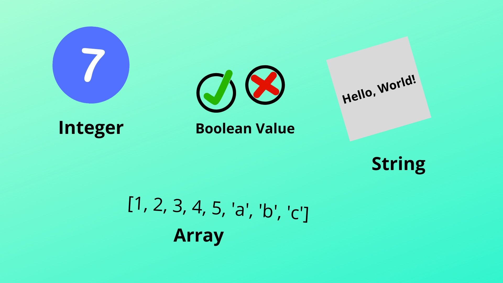

Chapter 3 Introduction to programming
3.1 What is an algorithm?
Welcome to the first lesson of our course! Today, we’re going to explore two fundamental concepts in programming: algorithms and flowcharts. Don’t worry if these terms sound a bit technical; we’ll break them down into simple ideas.
Imagine you’re following a recipe to bake a cake. The recipe gives you step-by-step instructions on what to do, right? An algorithm is similar. It’s a set of instructions or steps designed to perform a specific task. In programming, we use algorithms to tell the computer exactly what we want it to do.
3.2 Why are Algorithms Important in Programming?
Clarity: Algorithms serve as an essential tool for strategizing and planning our code. They provide us with a clear roadmap of the steps we need to follow before we start writing the actual code. This pre-coding stage can help us avoid potential issues and ensure that our solutions are well thought out.
Problem-Solving: Algorithms play a crucial role in problem-solving. They allow us to break down complex tasks into a series of simpler steps, making them easier to manage and understand. By using algorithms, we can tackle large problems by solving each small part one at a time, thus making the overall problem-solving process more efficient and manageable.
Efficiency: A well-designed algorithm can save significant time and resources. It can help us optimize our code to perform tasks in the fastest and most efficient way possible. By improving the efficiency of our code, we can ensure that it runs smoothly and quickly, thus enhancing the performance of our software or application.
3.3 A Real World Example:
In this algorithm, we’ll learn how to find the length of a DNA sequence. Knowing the length of a DNA sequence is important for various biological analyses.
Start: Begin the algorithm.
Input DNA Sequence: Ask the user to input a DNA sequence. For example, the sequence could be a string of letters like “ATCGATGCTA.”
Initialize Length: Set a variable called “Length” to 0. This variable will be used to keep track of the length of the sequence.
For Each Base in DNA Sequence:
Start a loop that goes through each base in the DNA sequence, one by one.
For the input “ATCGATGCTA,” the loop will start with “A.”
Increase Length by 1: For each base you encounter in the sequence, add 1 to the “Length” variable. This counts the number of bases in the sequence.
Repeat: Continue the loop until you have processed all the bases in the DNA sequence.
Output Length: Once the loop is finished, the “Length” variable will contain the length of the DNA sequence. Display this value as the output.
End: End the algorithm.
3.4 Variables, Data Types, and Expressions
In this lesson, we’re going to explore some fundamental concepts of programming that are crucial in understanding how to write code for computational biology. We’ll focus on three key ideas: variables, data types, and expressions. Think of these as the building blocks for creating a language that your computer can understand and use to solve biological problems.
3.4.1 Variables
A variable is quite similar to a labeled box. It’s a container where you can store information or data. Once you have this box (variable), you can do various things with it: you can put things into it, take things out of it, or even change what’s inside it to something else. This flexibility is immensely useful when dealing with large volumes of data or when you’re accessing often to a specific piece of that data, a common occurrence in the field of computational biology.

# Step 1: Define a variable and store the DNA sequence
gene_sequence = "ATCGAGCTAGCTGCTAGCTAGCTAGCT"
# Step 2: Print the stored DNA sequence
print(gene_sequence)## [1] "ATCGAGCTAGCTGCTAGCTAGCTAGCT"For instance, consider a situation where you’re working with gene sequences. You can use a variable like ‘gene_sequence’ to store a particular gene’s sequence. Later, you can access this stored sequence, manipulate it, or compare it with other sequences as needed in your computational biology tasks.
3.4.2 Data Types
In programming, similar to the real world, we come across various data types that help us to structure and understand information. These data types include numbers, which could be whole numbers or numbers with decimal points; text, often referred to as strings in programming terms; booleans, representing True or False values; and lists, which are utilized to hold collections of items.

Each of these data types serve a unique purpose and are used in different contexts, playing an integral role in how we write and interpret code.
Numbers: In programming, numbers can be whole or decimal. They represent measurements or quantities in computational biology, like DNA length or chemical concentration.
Text (Strings): Strings are sequences of characters, used for gene names, DNA sequences, or any textual information in computational biology.
Lists/Arrays: Lists group items together, useful in handling multiple genes, proteins, or biological elements. They can store different gene names or DNA sequences.
Booleans: Booleans represent true or false values and are used to express conditions or decisions based on a yes/no scenario, like determining if a specific gene is present.
Understanding data types is crucial because it helps you work with biological data accurately and efficiently. When you’re coding in computational biology, knowing whether you’re dealing with numbers, text, or lists allows you to use the right tools and operations for each type of data.
For instance, if you need to perform calculations on gene lengths (numbers), you’ll use mathematical operations. If you want to search for a specific gene name (text), you’ll use string manipulation techniques. And when you’re handling multiple genes (lists), you’ll employ list-related functions to process them effectively.
3.4.3 Expressions

In the world of programming, expressions are like simple puzzles or equations that you can use to do things with data. These expressions are created by putting together a few essential elements:
Values: Think of these as numbers, like 2 or 3, that you want to work with. In computational biology, these could be things like the length of a gene or the number of amino acids in a protein.
Variables: These are like labeled containers where you can store information. For example, you might have a variable called ‘gene_length’ that holds the length of a specific gene sequence.
Operators: Operators are special symbols like +, -, *, or / that you use to perform operations on values and variables. They tell the computer what kind of action to take.
Now, let’s dive into some beginner-level examples in computational biology:
3.4.4 Example: Finding the average number of bases appearances in a set of DNA strings
Let’s suppose we want to calculate the average number of bases in a DNA string. Let’s assume we already processed the DNA string and we know the counts for each one.
Given counts of each base:
Calculate the total number of bases
Calculate the average number of bases
Print the result
## [1] 100In this code:
We start by declaring the counts of each base using variables (number_a, number_t, number_c, number_g).
We calculate the total number of bases by summing up the counts.
Then, we compute the average number of bases by dividing the total by the number of different bases (4 in this case, representing A, T, C, and G).
Finally, we print the result, which gives us the average number of bases in the DNA string.